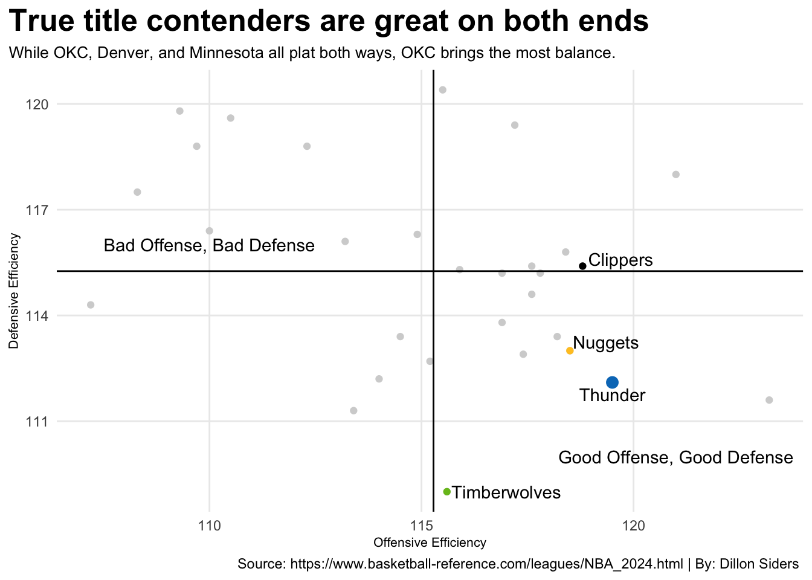

Despite the youth and inexperience the Oklahoma City Thunder fielded one of the top teams in the NBA this year and established themselves as true title contenders in the wild Western Conference.
Author
Dillon Siders
Published
May 5, 2024
This year in the NBA we were treated to one of the most competitive Western Conferences ever. By the time all the postseason teams (playoff and play-in) were set every team in the West had at least 46 wins. Even the eleven-seed Houston Rockets finished 41-41 which would’ve been good enough for the nine-seed in the East.
In a conference this competitive it can be hard to tell which teams are the cream of the crop. Every day these great teams clashed creating some great basketball, but it made it hard to discern who truly was the best team in the West.
For most NBA watchers, the choice was the Denver Nuggets. Looking to win back-to-back championships behind the wizardry of Nikola Jokic they played great this year but showed some regression cracking the door for other teams. Two teams, in particular, decided to break it down with a battering ram.
Both the Oklahoma City Thunder and Minnesota Timberwolves made tremendous leaps in terms of team success this year. Minnesota turned last year’s 42-win first-round exit into 56 wins and the 3rd seed. OKC made an even larger jump going from a sub .500 record(40-42) to the No.1 seed in the entire conference.
Even though OKC and Minnesota had phenomenal regular seasons many still believe that Denver is still the favorite. To get a better look at how well teams performed over the season we can look at the standings seeding over the entire season.
Heading into the playoffs the standings finished with the Thunder 1st, the Nuggets 2nd, and the Timberwolves 3rd, but it was a lot closer than that. OKC and Denver finished with the same record of 57-25 and Minnesota was one game behind at 56-26.
This was somewhat unfortunate for the Timberwolves since they held the top seed for the most amount of time during the season before slipping up down the stretch. OKC followed suit by staying in 2nd most of the year before stealing 1st. Denver, on the other hand, was less consistent than both.
For most of the season, Denver hovered between 3rd and 4th. Even though they were less consistent than the Timberwolves and Thunder they managed to keep teams like the Mavericks and Clippers from holding a top 3 seed for more than a week or two at a time. The consistency throughout 82 games shows how dominant these teams were compared to the rest of the West.
Another way to show how OKC, Denver, and Minnesota dominated the Western Conference this year is their season point differential. A teams total point differential can give insight into whether they outclassed their competition consistently, or if they scraped by with hard-fought wins.
Code
nbabox2024 <-load_nba_team_box(2024)newnbabox2024 <- nbabox2024 |>mutate(pointdiff=team_score-opponent_team_score) |>arrange(game_date) |>group_by(team_display_name) |>mutate(cumpointdiff=cumsum(pointdiff)) playoffteams <-c("Oklahoma City Thunder", "Denver Nuggets", "Minnesota Timberwolves", "LA Clippers", "Dallas Mavericks", "Phoenix Suns", "Los Angeles Lakers", "New Orleans Pelicans", "Boston Celtics", "New York Knicks", "Milwaukee Bucks", "Cleveland Cavaliers", "Orlando Magic", "Indiana Pacers", "Philadelphia 76ers", "Miami Heat")playoffs <- newnbabox2024 |>filter(team_display_name %in% playoffteams) bos <- playoffs |>filter(team_display_name =="Boston Celtics")okc <- playoffs |>filter(team_display_name =="Oklahoma City Thunder")min <- playoffs |>filter(team_display_name =="Minnesota Timberwolves")den <- playoffs |>filter(team_display_name =="Denver Nuggets")lac <- playoffs |>filter(team_display_name =="LA Clippers")ggplot() +geom_step(data=playoffs, aes(x=game_date, y=cumpointdiff, group=team_display_name), color="lightgrey") +geom_step(data=bos, aes(x=game_date, y=cumpointdiff, group=team_display_name), color="#007A33") +geom_step(data=okc, aes(x=game_date, y=cumpointdiff, group=team_display_name), color="#007AC1") +geom_step(data=min, aes(x=game_date, y=cumpointdiff, group=team_display_name), color="#78BE20") +geom_step(data=den, aes(x=game_date, y=cumpointdiff, group=team_display_name), color="#FFC627") +geom_step(data=lac, aes(x=game_date, y=cumpointdiff, group=team_display_name), color="black") +annotate("text", x=as.Date("2024-02-15"), y=630, label="Celtics") +annotate("text", x=as.Date("2024-03-21"), y=572, label="Thunder") +annotate("text", x=as.Date("2024-03-13"), y=393, label="Timberwolves") +annotate("text", x=as.Date("2024-04-23"), y=400, label="Nuggets") +annotate("text", x=as.Date("2024-04-20"), y=310, label="Clippers") +labs(x="Date",y="Cumulative Point Differential",title="Youth shines in the Western Conference.",subtitle="The Thunder stand atop the West in point differential despite being the second youngest team in the league.",caption="Source: hoopR | By: Dillon Siders" ) +theme_minimal() +theme(plot.title =element_text(size =20, face ="bold"),axis.title =element_text(size =8),plot.subtitle =element_text(size =10),panel.grid.minor =element_blank(),plot.title.position ="plot" )
The cumulative point differential once again shows that the Thunder, Timberwolves, and Nuggets were the top 3 teams in the West. It also showed that the Thunder and Timberwolves slightly edged the Nuggets out once again.
On the season the OKC and Minnesota finished with a plus 500 point differential while the Nuggets came in just below that mark. Even though the Nuggets were below the Thunder and Timberwolves they were well ahead of the 4th-seeded Clippers by a couple hundred points.
While point differential is great to measure a team’s consistency it is not the only way to predict playoff success. There are a multitude of metrics one can look at, but two that paint a fairly good picture are a team’s offensive and defensive ratings.
Code
nbateamadvanced <-read_csv("nba_advanced_team.csv") nbateamadvancedrenamed <- nbateamadvanced |>rename(Rank=...1,Team=...2,Age=...3,Wins=...4,Loses=...5,ExpectedWins=...6,ExpectedLoses=...7,MarginOfVictory=...8,StrengthOfSchedule=...9,SimpleRating=...10,ORating=...11,DRating=...12,NetRating=...13,Pace=...14,FreethrowRate=...15,`3PTRate`=...16,TrueShootingPct=...17,EffectiveFGPct=`Offense Four Factors...19`,TurnoverPct=`Offense Four Factors...20`,OffensiveReboundPct=`Offense Four Factors...21`,FreethrowsPerFGA=`Offense Four Factors...22`,OpponentEffectiveFGPct=`Defense Four Factors...24`,OpponentTurnoverPct=`Defense Four Factors...25`,DefensiveReboundPct=`Defense Four Factors...26`,OpponentFreethrowsPerFGA=`Defense Four Factors...27`,Arena=...29,Attendance=...30,AvgAttendance=...31 ) |>filter(Rank !="Rk") |>mutate(Team=gsub("\\*", "", Team)) |>mutate_at(vars(-Team, -Arena), as.numeric) avg_ratings <- nbateamadvancedrenamed |>summarise(AvgORating=mean(ORating),AvgDRating=mean(DRating) )okc <- nbateamadvancedrenamed |>filter(Team =="Oklahoma City Thunder")den <- nbateamadvancedrenamed |>filter(Team =="Denver Nuggets")min <- nbateamadvancedrenamed |>filter(Team =="Minnesota Timberwolves")lac <- nbateamadvancedrenamed |>filter(Team =="Los Angeles Clippers")ggplot() +geom_point(data=nbateamadvancedrenamed, aes(x=ORating, y=DRating), color="lightgrey") +geom_point(data=den, aes(x=ORating, y=DRating), color="#FFC627") +geom_point(data=min, aes(x=ORating, y=DRating), color="#78BE20") +geom_point(data=okc, aes(x=ORating, y=DRating), size=3, color="#007AC1") +geom_point(data=lac, aes(x=ORating, y=DRating), color="black") +geom_hline(yintercept =115.2567) +geom_vline(xintercept =115.2833) +annotate("text", x=119.35, y=113.25, label="Nuggets") +annotate("text", x=119.5, y=111.75, label="Thunder") +annotate("text", x=119.7, y=115.6, label="Clippers") +annotate("text", x=117, y=109, label="Timberwolves") +annotate("text", x=121, y=110, label="Good Offense, Good Defense") +annotate("text", x=110, y=116, label="Bad Offense, Bad Defense") +labs(x="Offensive Efficiency",y="Defensive Efficiency",title="True title contenders are great on both sides of the court.",subtitle="While all the top teams in the west play both ways the Thunder bring the most balance between offense and defense.",caption="Source: https://www.basketball-reference.com/leagues/NBA_2024.html | By: Dillon Siders " ) +theme_minimal() +theme(plot.title =element_text(size =19, face ="bold"),axis.title =element_text(size =8),plot.subtitle =element_text(size =10),panel.grid.minor =element_blank(),plot.title.position ="plot" )

When comparing offensive and defensive ratings between teams we see OKC, Denver, and Minnesota separate themselves again. Although they separated themselves the Timberwolves did it differently than the Thunder and Nuggets.
This year Minnesota had the best defense in the NBA by a fairly large margin. Their defensive identity pairs perfectly with rising superstar Anthony Edwards’ electric offensive game creating the perfect storm. OKC and Denver took slightly different approaches.
Neither OKC nor Denver can match Minnesota’s defense because they do not have the personnel to do it. Minnesota starts two 7-footers, a 6’10 wing, and brings another big off the bench as their 6th man. OKC and Denver do not possess the same size, but that doesn’t make them much worse at defense.
Where OKC and Denver lack on defense they make up for it in offense. While all three teams finished in the top 8 in defensive rating, only OKC and Denver did that for offensive rating, both finishing top 5. Minnesota ended the season ranked 16th on offense.
This is again because of team personnel. Minnesota heavily relies on one player to generate most of their offense, that being Anthony Edwards. OKC and Denver can play a more balanced way because they each have multiple great shot-creators and rely more on ball/player movement.
In a Western Conference as competitive as this it is hard to predict what will and won’t happen. Those predictions get even harder come playoff time when everything is turned up a level. This is why saying a team like the Thunder can’t compete even though they stack up well against the defending champions and the rest of the conference can be shortsighted.